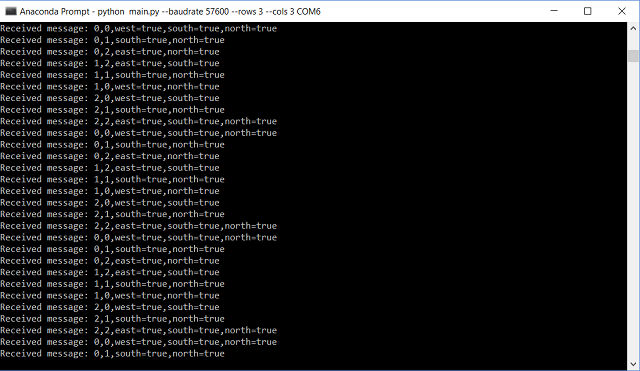

Goals
- Make a robot that can start on a 660Hz tone.
- Navigate a small test maze autonomously.
- Send the maze information it discovers wirelessly to a base station.
- Display maze information on a screen for debugging.
Overview
This lab integrates systems that we had thoroughly developed and explained in previous labs and milestones. Below, we document the new content for this lab, RF communication between Arduinos using the transceivers provided, and the underlying software. Refer to our main page to find information about subjects like line following, collision avoidance, wall following, and 660 Hz audio signal detection.
Data structure
Because the Arduino has a very limited memory (~2KB), we decided to store all the grid's information in a 2D byte array, where the first and second indices represent the column and row respectively, and the value determines the walls we have observed. We use the following convention, for a block in the grid array, the least significant bit represents if the eastern wall is there, the 2nd bit represents the northern wall, 3rd bit western wall, and 4th bit western wall. We have 4 bits unused, that we might utilize later on for treasure information. Also orientation can be 1 if we are facing east, 2 if we are facing north, 4 if we are facing west, and 8 if we are facing south. And this is done so we can easily multiply the boolean output of the front and right sensors by the orientation and embed it in the grid information byte (of course, shifting (or taking the remainder) is needed when the multipication output is greater than 15) so we can have only one line to compute the new block information.
grid[row][col] |= frontSensor * orientation | rightSensor * orientation * 8 | frontSensor * orientation >> 16 | rightSensor * orientation * 8 >> 16;
To transmit the data, we embed the column, row, and information byte (each of these is one byte) into a long (again, one byte of the long remains unused) and transmit it to the radio. We do the embedding by adding (or using bitwise-OR) and then shift it by the desired amount to fit everything.
Although as of now, our navigation algorithm (right wall following) doesn't require the robots to have a copy of the grid, we keep it stored on board just in case we decided to implement Depth First Search or another algorithm for navigation.
RF communication and maze mapping simulation
For this lab, we were provided 2 Nordic nRF24L01+ transceivers (with breakout boards for easier mounting on the Arduinos), and 1 extra Arduino Uno. WATCH OUT for these RF modules!!! They broke very often and very easily. We didn’t have any issues with it, but several teams did.
These radios were connected to digital pins 9 to 13, and powered with 3.3V. We had to download the RF24 Arduino Library and were given a basic sketch as a guide to build our communication protocol.
After deciding on the data structure, as discussed in the previous section, we ran a small simulation of the maze navigation to test communication between the Arduinos. Find below a video demonstration and a picture of the command prompt showing the position and walls detected during the simulation:
Partial integration
For this part, we started integrating the code for RF communication with the actual systems of the robot. For space concerns, we will not show the code for this part, as it is very similar to that in the next section, Final Integration. In this part, the robot traverses the maze using line following, wall detection, and transmits this information to the base station, which displays it in the GUI.
For this part, the base station was programmed as follows:
RF24 radio(9,10);
const uint64_t pipes[2] = { 0x0000000026LL, 0x0000000027LL };
typedef enum { role_ping_out = 1, role_pong_back } role_e;
const char* role_friendly_name[] = { "invalid", "Ping out", "Pong back"};
role_e role = role_pong_back;
int rows = 2; //change grid size depending on maze
int cols = 3;
byte grid[3][2];
void setup() {
Serial.begin(57600);
printf_begin();
radio.begin();
radio.setRetries(15,15);
radio.setAutoAck(true);
radio.setChannel(0x50);
radio.setPALevel(RF24_PA_MIN);
radio.setDataRate(RF24_250KBPS);
if ( role == role_ping_out )
{
radio.openWritingPipe(pipes[0]);
radio.openReadingPipe(1,pipes[1]);
}
else
{
radio.openWritingPipe(pipes[1]);
radio.openReadingPipe(1,pipes[0]);
}
radio.startListening();
radio.printDetails();
}
(...)
Click here to see full code for this part
Final Integration
To conclude the lab, we connected all systems to test the overall performance of the robot. Keep in mind we are using whistle detection (660Hz sound), maze navigation (line/wall following), robot detection (6.08kHz IR signal), decoy avoidance (18kHz IR signal), and data transmission with a base station that displays the detected walls on the GUI given. Also notice in the background the soundtrack of Mission Impossible, which covers a wide range of frequencies, introducing noise to the environment to test the robustness of our audio filtering.
Additions to previous code
role_e role = robot;
byte orientation = 1; // right = 1, up = 2, left = 4, down = 8
byte right = 1;
byte up = 2;
byte left = 4;
byte down = 8;
byte posX = -1; //to take into account that we will detect corner right when we start
byte posY = rows - 1;
arduinoFFT FFT = arduinoFFT();
#define CHANNEL A0
const uint16_t samples = 128; //This value MUST ALWAYS be a power of 2
const double samplingFrequency = 20000; //Hz, must be less than 10000 due to ADC
unsigned int sampling_period_us;
unsigned long microseconds;
#ifdef __AVR__
#include < avr/power.h >
#endif
#define SCL_INDEX 0x00
#define SCL_TIME 0x01
#define SCL_FREQUENCY 0x02
#define SCL_PLOT 0x03
#ifndef cbi
#define cbi(sfr, bit) (_SFR_BYTE(sfr) &= ~_BV(bit))
#endif
#ifndef sbi
#define sbi(sfr, bit) (_SFR_BYTE(sfr) |= _BV(bit))
#endif
(...)
Click here to see full code for this part